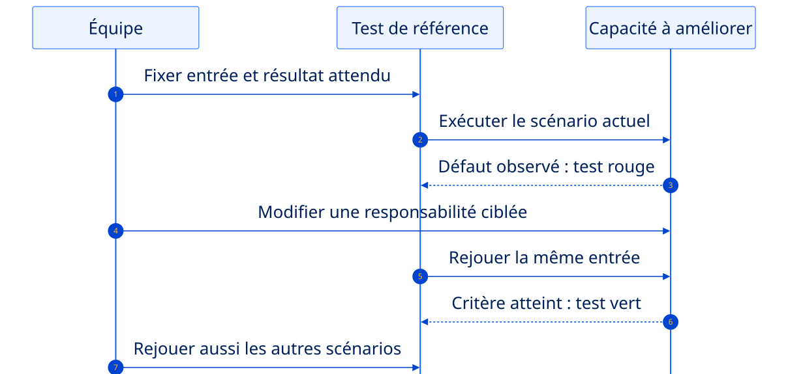
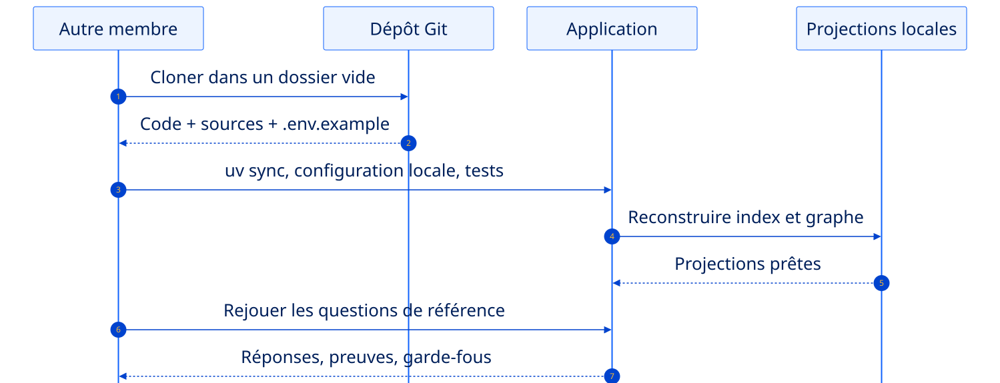

Améliorer utilement.
Livrer proprement.
S6 choisit un progrès mesurable. S7 transforme le prototype en démonstration reproductible.
Deux séances, quatre jalons visibles.
Choisir
Un problème concret et une mesure avant/après.
Améliorer
Une évolution petite, testée et documentée.
Intégrer
Installation fraîche et parcours de bout en bout.
Répéter
Démo, limites et défense individuelle.
Le prochain progrès doit être visible par un utilisateur.
Choisir un défaut reproductible.
Reprendre les questions et traces des séances précédentes. Conserver un résultat avant toute modification.
Changer une seule responsabilité.
Écrire le test qui manque, modifier la capacité concernée, puis rejouer tous les scénarios.
Faire repartir le projet chez un autre membre.
Nouveau dossier, configuration décrite, projections reconstruites et démonstration chronométrée.
Traitez une faiblesse observée, pas une technologie à placer.
Réponses
Chunking, citations, seuil, question hybride ou abstention.
Parcours
Nouveau tool, relation graphe, filtre ou écran utile.
Confiance
Tests, validation, erreurs ou démarrage reproductible.
Gardez une preuve du point de départ.
Choisir un scénario
Une question, une action ou un démarrage qui pose problème.
Capturer le résultat
Sortie, durée, sources, erreur ou nombre d’étapes.
Fixer le succès
Un critère observable qui permettra la comparaison.
Exemple
« La question hybride ne trouve qu’un document. Après ajout d’une relation et d’un alias, elle doit produire un chemin sourcé à deux sauts. »
Une seule mesure suffit si elle est claire.
Un même scénario prouve l’avant et l’après.

Écrire le critère avant la modification. Un test rouge reproduit le défaut ; la même entrée vérifie ensuite le progrès. Flèche pleine : appel ; pointillés : retour.
Réduisez l’amélioration à une expérience mesurable.
Créer une fiche courte
Dans
docs/improvement.md: problème, entrée, résultat actuel et critère attendu.Écrire le test qui échoue
Préparer des fakes et les données minimales. Capturer sources, chemin ou nombre d’appels selon le défaut.
Modifier, comparer, documenter
Rejouer sans changer la question ni le critère. Garder le tableau avant/après et une limite réelle.
Ajoutez la capacité au bon endroit, puis rejouez tout.
Règle ?
Dans le domaine, avec un test direct.
Orchestration ?
Dans un use case, via les ports existants.
Technologie ?
Dans un adaptateur sélectionné au bootstrap.
Capsule C5
Changez Cohere ↔ Ollama uniquement avec FILROUGE_LLM_PROVIDER. Le domaine et les use cases ne bougent pas.
Votre projet doit repartir uniquement depuis Git.
Cloner ailleurs
Nouveau dossier, aucun environnement ou donnée locale cachée.
Installer
uv sync --extra all --group dev.
Reconstruire
Corpus, index et graphe depuis les artefacts versionnés.
La livraison commence dans un dossier vide.

Un autre membre suit uniquement le README et les fichiers suivis par Git, avec sa configuration locale. Flèche pleine : appel ; pointillés : retour.
Transformez le README en procédure rejouable.
Faire une installation croisée
Un autre membre clone ailleurs. Aucun transfert de .venv, d’index, de graphe ou de fichier secret.
Lister les commandes de reconstruction
Documenter vos vrais scripts, leur ordre et les comptes attendus. Le profil fake doit démarrer sans clé.
Répéter et corriger le premier blocage
Rejouer les scénarios puis la démo. Corriger le README à l’endroit exact où l’autre membre s’est arrêté.
Vérifiez ce que Git contient… et ce qu’il ne contient pas.
.env.example décrit toutes les variables.Capsule C7 · DRY
Extraire un composant UI réellement dupliqué dans une fonction testable. Ne refactorisez pas tout le projet à la veille de la livraison.
Une démo courte, puis une décision défendue par personne.
Le besoin
Domaine, utilisateurs et question centrale.
Le parcours
Une question simple, une relation et un garde-fou.
Le recul
Architecture, mesure avant/après et limite principale.
Votre prototype est devenu un projet défendable.
Vous avez prouvé
- une amélioration mesurable ;
- une installation reproductible ;
- un parcours complet et borné ;
- des limites connues.
Dernier contrôle
- Git propre et poussé ;
- tests et Ruff au vert ;
- README relu par un autre membre ;
- démonstration chronométrée.
À vous : améliorer, reproduire et défendre.
- S6 · Choisir et mesurer
Un défaut, une entrée stable et un critère de réussite dans docs/improvement.md.
- S6 · Corriger avec une preuve
Test rouge → évolution ciblée → test vert ; rejouer les quatre questions et noter la limite.
- S7 · Installer chez un autre membre
Clone neuf, .env.example, commandes de reconstruction et tests ; corriger le README.
- S7 · Répéter la soutenance
Démo chronométrée, sources visibles, un garde-fou ; une décision expliquée par personne.